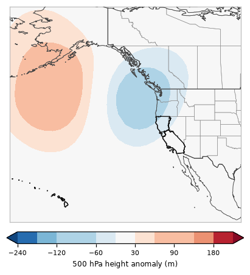

One of 6 recurring 500 hPa patterns over the eastern Pacific and western U.S. in California's fire seasons, 2001–2025 · 19% of season days

This pattern has a ridge (heights +106 m above normal) centered near the northeast Pacific and a trough (-99 m) centered near the Pacific Northwest, with lower than normal heights over California (cooler, more onshore flow, more chance of showers).
Documented fire-weather patterns it goes with: Northern California southwest foehn winds (×2.3 as common on those days); Southern California sundowner winds (×1.6 as common on those days). How these line up with CEFA and the Synthesis of Knowledge of Extreme Fire Behavior.
Pyroconvection (23 studied California fires, 491 fire days): 1 pyroCb and 11 pyroCu days in Regime B (pyroCb days ×0.6 as common as on all study days). Which days.
The map is the average 500 hPa (~18,000 ft) height anomaly over every day assigned to this regime: red = higher than normal (ridge), blue = lower than normal (trough). Upper-level ridges bring sinking, warming, drying air; troughs bring cooler air, onshore flow and the chance of showers or thunderstorms, and the wind shifts and dry northerly flow that can follow them.
Share of each month's days (2001–2025) in Regime B.
Odds of a fire day with at least this much satellite-mapped growth, compared with the usual odds for the same time of year.
| Region | ≥1,000 ac | ≥5,000 ac | ≥10,000 ac |
|---|---|---|---|
| Northern California | ×0.69 | ×0.84 | ×0.68 |
| Southern California | ×0.97 | ×0.98 | ×1.09 |
| California | ×0.87 | ×0.91 | ×0.85 |
×1.00 = no different from usual; ×1.5 = half again as likely; ×0.6 = 40% less likely. A single 500 hPa pattern is only a modest signal on its own: lightning, wind events and fuel dryness matter a lot.
| Fire day | Acres (CA) | Largest fires that day |
|---|---|---|
| 2020-08-22 | 97,139 | W-5 COLD SPRINGS (29,781 ac), SCU LIGHTNING COMPLEX (26,198 ac), AUGUST COMPLEX (15,034 ac) |
| 2020-09-13 | 92,237 | AUGUST COMPLEX (37,787 ac), CASTLE (SQF COMPLEX) (23,695 ac), CREEK (16,106 ac) |
| 2018-08-04 | 88,452 | RANCH (MENDOCINO COMPLEX) (62,486 ac), CARR (11,031 ac), DONNELL (7,463 ac) |
| 2020-08-23 | 73,954 | W-5 COLD SPRINGS (22,326 ac), SCU LIGHTNING COMPLEX (16,734 ac), HENNESSEY (LNU LIGHTNING COMPLEX) (10,013 ac) |
| 2024-09-10 | 66,548 | BRIDGE (46,735 ac), LINE (10,255 ac), AIRPORT (9,558 ac) |
| 2024-07-24 | 63,395 | PARK (58,408 ac), BOREL (4,146 ac), APACHE (744 ac) |
| 2021-08-30 | 63,254 | DIXIE (31,877 ac), CALDOR (13,593 ac), MCCASH (6,192 ac) |
| 2023-07-29 | 58,033 | YORK (58,025 ac), BONNY (7 ac) |
| 2020-09-14 | 51,116 | AUGUST COMPLEX (17,460 ac), NORTH COMPLEX (5,839 ac), CASTLE (SQF COMPLEX) (5,478 ac) |
| 2020-08-24 | 49,832 | AUGUST COMPLEX (14,767 ac), CASTLE (SQF COMPLEX) (8,686 ac), SCU LIGHTNING COMPLEX (7,136 ac) |
| 2018-08-02 | 48,210 | RANCH (MENDOCINO COMPLEX) (32,724 ac), FERGUSON (5,666 ac), CARR (5,323 ac) |
| 2021-08-31 | 43,819 | DIXIE (25,541 ac), CALDOR (8,021 ac), MCCASH (5,429 ac) |
1 of the study's 13 pyroCb days formed under Regime B:
PyroCu (fire-rooted tops −20 to −40 °C) under Regime B: 11 days (August Complex, Caldor, Castle (SQF Complex), Dixie, Line, North Complex, York).
Median 700 hPa moisture at the fire: 6.3 g/kg on pyroCb days, 2.9 g/kg on days with no deep plume cloud.
23 studied California fires (2018–2024), GOES-classified and reviewed by eye. Pyroconvection under the scenarios.
% of all members (models weighted equally) in Regime B, by day.
| 10/24 | 10/25 | 10/26 | 10/27 | 10/28 | 10/29 | 10/30 | 10/31 | 11/01 | 11/02 | 11/03 | 11/04 | 11/05 | 11/06 | 11/07 |
|---|---|---|---|---|---|---|---|---|---|---|---|---|---|---|
| 0 | 0 | 0 | 0 | 1 | 37 | 46 | 58 | 22 | 27 | 26 | 20 | 10 | 3 | 6 |